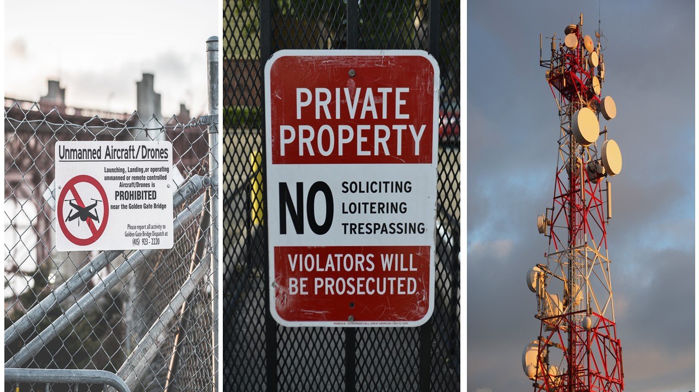

Drones, also known as Unmanned Aerial Systems (UAS), are a popular and versatile tool for various purposes, including photography, videography, surveying, and more. However, operating drones comes with responsibilities. It is essential to be aware of and adhere to your local and national drone regulations. Failure to do so can result in legal consequences and compromise safety.
| 1.Registration: Ensure your drone is registered with the appropriate aviation authority. | .
| 2.Operator Requirements: Comply with age restrictions and any licensing or knowledge test requirements. |
| 3.No-Fly Zones: Respect no-fly zones, which often include areas near airports, government buildings, and military facilities. |
| 4.Altitude Limits: Observe altitude restrictions, typically between 120 to 400 feet above ground level. |
| 5.Line of Sight: Maintain visual contact with your drone during flight for safety. |
| 6.Time of Day: Respect time-of-day restrictions, particularly for night flights. |
| 7.National and Local Rules: Be aware of both national and local regulations, as some areas may have additional rules. |
| 8.Privacy: Do not use your drone in a way that invades others' privacy, and respect data protection laws when collecting data. |
| 9.Air Traffic Control: Seek clearance from air traffic control in controlled airspace. |
| 10.Landing and Takeoff Sites: Use designated launch and landing areas where required. |
|  |